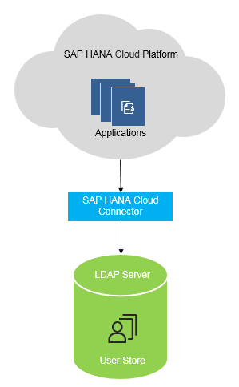

Using an On-Premise User Store
If you already have an existing on-premise system with a populated user store, you can configure SAP Cloud Platform applications to use that on-premise user store. This approach is similar to implementing identity federation with a corporate identity provider. In that way, applications do not need to keep the whole user database, but request the necessary information from the on-premise system.
Context
Applications can use the on-premise system to:
-
check credentials
-
search for users
-
retrieve user details
-
retrieve information about the groups a specific user is a member of. You can use this information for user authorizations. See Managing Roles.
You can use two types of on-premise user store:
-
SAP Single Sign-On with a SAP NetWeaver Application Server for Java System - the applications on SAP Cloud Platform connect to the SAP on-premise system using Destination API (and, if necessary, SAP HANA Cloud Connector), and make use of the user store there.

-
Microsoft Active Directory - this is an LDAP server that can serve as an on-premise user store. The applications on SAP Cloud Platform connect to the LDAP server using SAP HANA cloud connector, and make use of the user store there.

Alternatively to the above scenarios, you can implement identity federation with a Identity Authentication tenant, where the tenant is configured to use an on-premise user store. See: